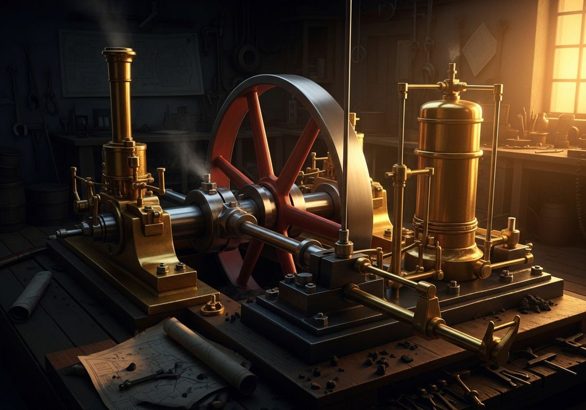
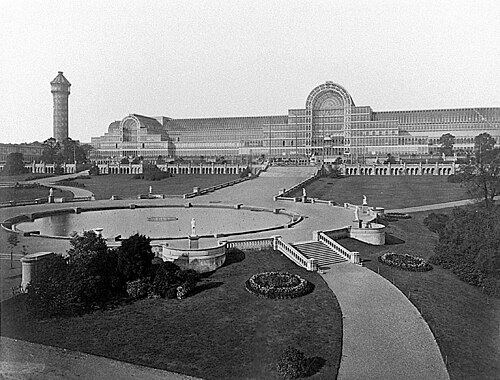
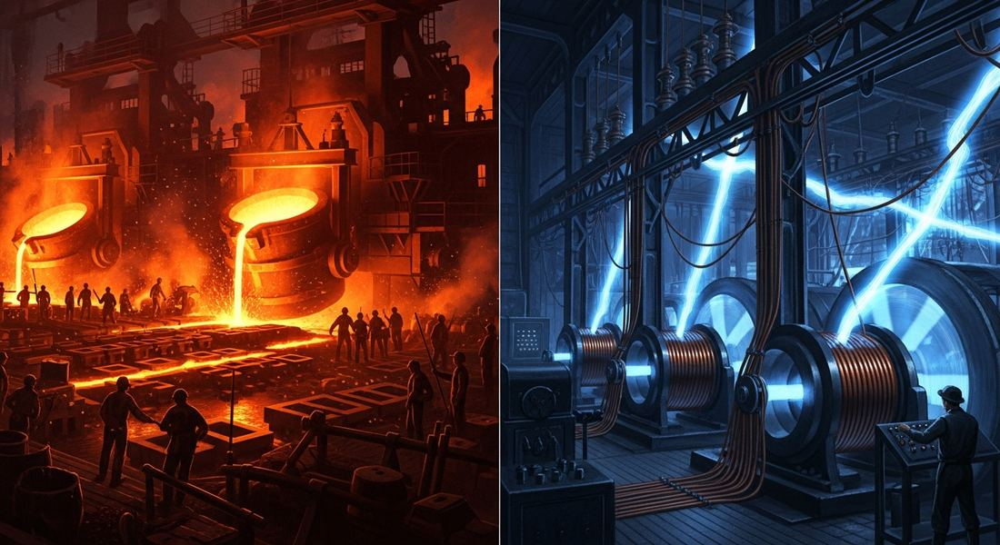
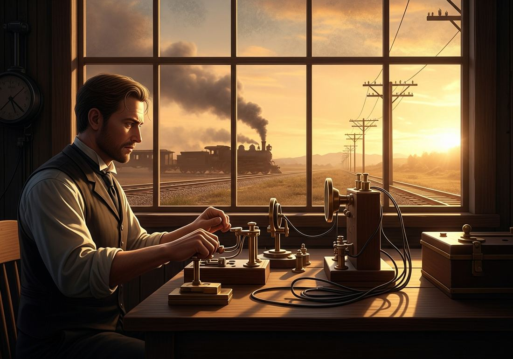

5.5 Technology of the Industrial Age
- LO-A: The fossil fuels revolution: Before steam, humans relied on human muscle, animal power, water wheels, and windmills for energy. All of these were limited in power output and unpredictable. Coal-fired steam engines were the first energy source that could be (1) scaled up indefinitely, (2) used anywhere (not just near water), and (3) made more powerful on demand. Oil, discovered in Pennsylvania in 1859, added another fossil fuel that eventually powered the internal combustion engine, enabling automobiles and a new wave of industry in the 20th century. Two waves of industrial technology. First Industrial Revolution (c. 1760–1850): the steam engine (Watt's 1769 patent) ran on coal and powered factory machinery, mine pumps, and eventually locomotives. Coal replaced human muscle and animal power as the primary energy source for manufacturing. Second Industrial Revolution (c. 1850–1900): new materials and energy sources, cheap steel (Bessemer process, 1856), synthetic chemicals, electricity (Edison's light bulb 1879, electric motors), and precision machinery. The second wave expanded what industry could make and how efficiently it could make it. Railroads, steamships, and the telegraph: These three technologies connected the world in ways that had never been possible before. Railroads opened the interiors of continents to trade and settlement. Steamships made ocean voyages faster and more predictable. The telegraph (1837) enabled instant long-distance communication, the first time information could travel faster than a person. Together they shrank the world, enabled global trade and migration at new scales, and made imperial administration of distant territories practical.
Try each question before revealing the answer.
1. Before the steam engine, factories had to be built near rivers to use water wheels for power. How did steam power change where factories could be built?
2. The telegraph was invented in 1837 and by 1866 an undersea cable connected Britain and North America. Before the telegraph, how long did it take news to travel between continents, and why did this matter for trade and empire?
3. Steel is much stronger and more versatile than iron. Why couldn't factories use steel in large quantities before the Bessemer process of 1856?
4. Railroads dramatically increased trade within countries. How would this affect the kind of economy a country could develop?
5. What is a "fossil fuel" and why was the shift to fossil fuels significant for human history?
- Explain how technology shaped economic production over time.
Tap a term for its definition.
-
Definition: A machine that converts the heat energy from burning coal into mechanical motion, typically by heating water to produce steam that drives a piston or turbine. Significance: James Watt's improved steam engine (1769) became the primary power source of the First Industrial Revolution, running textile mills, pumping mines, and driving locomotives.
-
Definition: An engine that burns fuel (initially gasoline) inside the engine itself to produce power, rather than using external heat as steam engines do. Significance: Developed in the late 19th century; enabled automobiles, airplanes, and other machines. Powered by oil rather than coal.
-
Definition: Fuels formed from the ancient remains of plants and animals, coal, oil, and natural gas, storing concentrated chemical energy from millions of years ago. Significance: The energy source of industrialization; coal powered steam engines, oil powered internal combustion engines. The fossil fuels revolution gave human societies access to energy on an entirely new scale.
-
Definition: A method for mass-producing steel from molten iron by blowing air through it, removing impurities. Invented by Henry Bessemer in 1856. Significance: Reduced the cost of steel by 80–90%, making steel cheap enough for mass use in railroads, ships, buildings, and machinery, the core of the Second Industrial Revolution.
-
Definition: A phase of industrialization from roughly 1850–1914 marked by new industries: steel, chemicals, electricity, and precision machinery. Significance: Extended and deepened the First Industrial Revolution; new industries like electrical engineering, chemical manufacturing, and precision machine tools defined this period.
-
Definition: A communication system that sends electrical signals through wires to transmit coded messages over long distances instantaneously. Developed by Samuel Morse and others in the 1830s–1840s. Significance: The first technology to separate communication from physical transportation, for the first time, information could travel faster than a person.
-
Definition: Networks of iron/steel tracks on which steam-powered locomotives pulled passenger and freight cars. Significance: Dramatically reduced the cost and time of overland travel and freight movement; opened continental interiors to settlement and trade; enabled national economies to develop around regional specialization.
-
Definition: Ships powered by steam engines rather than sails, able to travel against wind and current and on more predictable schedules. Significance: Made ocean travel faster and more reliable; enabled more regular global trade; facilitated mass migration and imperial administration of distant territories.
🔥 The Energy Revolution: From Muscle to Coal
For almost all of human history, the energy available to do work was limited: human muscle, animal muscle (oxen, horses), flowing water, and blowing wind. All of these had natural limits. You could not get more work from a horse than the horse could physically do. You could not run a water wheel without a river. You could not sail without wind.
The steam engine broke these limits. By burning coal, a fossil fuel storing millions of years of concentrated solar energy, a steam engine could produce mechanical power on demand, at any scale, anywhere coal could be delivered. The energy contained in a pound of coal exceeded what a human worker could produce in an entire day. One steam engine could do the work of dozens of horses, indefinitely, without rest.
James Watt's improved steam engine (1769) was the key breakthrough. Earlier steam engines existed, but they were inefficient and only practical for pumping water out of mines. Watt's innovations made the engine practical for running factory machinery. He patented his design in 1769, and within decades, steam engines were powering textile mills, iron foundries, and eventually locomotives across Britain.

Watt's steam engine included a separate condenser, the key innovation that dramatically improved efficiency. It became the standard power source for British factories and mines and later for railroads worldwide (Google Gemini, 2025), commercially licensed.
⚙️ The First Industrial Revolution: Steam and Textiles
The First Industrial Revolution (roughly 1760–1850) was built on two foundations: the steam engine and the textile industry. Water wheels (and then steam engines) powered spinning and weaving machines, the spinning jenny (1764), the water frame (1769), and the power loom (1784). These machines could spin and weave cotton into cloth faster than any human hands, at a fraction of the cost.

The Crystal Palace, Hyde Park, London (1851), built for the Great Exhibition, the world's first international industrial fair. Joseph Paxton's iron-and-glass structure itself demonstrated the power of industrial manufacturing. Public domain, Wikimedia Commons.
Coal was essential. Steam engines needed coal to run; iron foundries needed coal to smelt iron. Britain's accessible coal fields, and the canal and later railroad systems that moved coal cheaply, were the physical infrastructure of early industrialization. By 1800, Britain was using more coal than the rest of the world combined.
The steam engine also had a direct military application: it could pump water out of deep mines, allowing miners to dig deeper for more coal. This made coal production self-reinforcing, more coal powered more steam engines that allowed mining of more coal that powered more factories.
🏗️ The Second Industrial Revolution: Steel, Electricity, Chemicals
By the mid-19th century, the First Industrial Revolution had transformed Britain and was spreading across Europe and America. But a second wave of technological change, beginning around 1850, opened entirely new industries:
- Steel (Bessemer process, 1856): Henry Bessemer's converter could produce steel from iron in 20 minutes, reducing costs by roughly 80%. Steel is stronger, lighter, and more versatile than iron, making it ideal for railroad tracks (which needed to bear enormous weight), structural beams in tall buildings, ships, and precision machinery. Cheap steel made skyscrapers, modern bridges, and ocean liners possible.
- Chemicals: The 19th century saw the creation of a synthetic chemical industry. Chemists developed synthetic dyes (replacing expensive natural dyes), fertilizers (enabling more productive agriculture), explosives (both military and industrial, for mining and construction), pharmaceuticals, and dozens of other products. Germany led the world in chemical industry by 1900.
- Electricity: Thomas Edison's light bulb (1879) and the development of practical electric generators made electricity commercially viable. Electric motors replaced steam engines in factories (they were cleaner, quieter, and could be placed anywhere). Electric lighting extended the working day. Telegraph and later telephone networks used electricity for communication. By 1900, electricity was reshaping daily life in industrialized cities.
- Precision machinery: The development of machine tools, lathes, milling machines, and the like, that could make identical, interchangeable parts at scale enabled mass production of complex goods. Interchangeable parts meant that a broken clock or a gun could be repaired by replacing a standard part rather than having a craftsperson remake it by hand.

The Second Industrial Revolution added steel, electricity, and chemicals to the industrial toolkit. By 1900, a new type of factory was possible, electrically lit, steel-framed, producing complex goods from standardized interchangeable parts (Google Gemini, 2025), commercially licensed.
🚂 Railroads, Steamships, and the Telegraph: Shrinking the World
Three technologies did more than any others to connect the world in the 19th century: railroads, steamships, and the telegraph. Together, they made distance less of a barrier than it had ever been in human history.
Railroads: The first practical steam locomotive was demonstrated by George Stephenson in 1825. By 1850, Britain had over 6,000 miles of railroad tracks; by 1900, the world had over 500,000 miles. Railroads transformed economies: they opened the interiors of continents (the American West, Siberia, India) to trade and settlement, allowed regional specialization in agriculture and manufacturing, and dramatically cut the cost of overland freight movement. A journey that took weeks by horse-drawn wagon took days by train.
Steamships: Steam-powered ships replaced sailing vessels as the dominant ocean transport by the mid-19th century. Steamships were faster, more reliable (not dependent on wind), and could travel routes that sailing ships could not (including upriver, against the current). The opening of the Suez Canal (1869), which cut the journey from Europe to Asia by weeks, combined with steamships to dramatically speed up global trade. Ocean voyages that had taken three months now took three weeks.
The telegraph: Samuel Morse demonstrated the electric telegraph in 1837. By 1844 there was a line from Washington to Baltimore; by 1866, a transatlantic cable connected Britain and North America. The telegraph was revolutionary because it separated communication from physical travel for the first time in human history. A message that previously took weeks to cross an ocean now took minutes. Business, government, journalism, and military command were all transformed.

Railroads and the telegraph developed together, telegraph lines typically followed railroad tracks. Railroads needed telegraphs to coordinate train schedules safely; telegraph companies needed railroad rights-of-way. The two technologies reinforced each other (Google Gemini, 2025), commercially licensed.
These videos will help you review Technology of the Industrial Age and solidify key concepts before your exam.
- A) That the steam engine was developed primarily to improve textile production rather than mining
- B) That steam engines made coal mining less dependent on human labor than any previous technology
- C) That the steam engine removed physical limits on how deep mines could be dug, enabling access to deeper coal deposits
- D) That Watt's steam engine was the first machine to use coal as a fuel source
- A) The decline of the coal industry as steel became an alternative fuel source
- B) The end of the First Industrial Revolution as steel replaced textiles as the primary manufactured good
- C) The replacement of steam power by electrical power in British factories
- D) The rapid expansion of railroad networks, urban construction, and shipbuilding that required large quantities of affordable steel
- A) That the telegraph represented a fundamental change in human capability, separating communication from physical travel for the first time
- B) That the telegraph was more historically significant than the railroad in connecting the world economically
- C) That the telegraph threatened to undermine national sovereignty by enabling global communication
- D) That Europe's leading newspapers viewed technological change with suspicion and concern
- A) The end of migration to interior regions as coastal cities became economically dominant
- B) Increased settlement, resource extraction, and trade in continental interiors that had previously been economically isolated
- C) Military conflicts between railroad companies competing for government land grants in frontier regions
- D) A decline in oceanic trade as overland routes became faster and cheaper
- A) The decline of British investment in Indian railroads as ocean shipping became more efficient
- B) Competition between Britain and France for control of the Indian Ocean trade network
- C) The shift from steam-powered ships back to sailing vessels as the Suez route required different navigation
- D) Increased volume of global trade and tighter integration of colonial and metropolitan economies through faster, more reliable shipping
Answer all three parts (A, B, C). Write your response before clicking to see sample answers.
Part A
Identify ONE technological innovation of the First Industrial Revolution (c. 1760–1850) and explain its significance for economic production.
Part B
Explain ONE way the Second Industrial Revolution (c. 1850–1914) differed from the First Industrial Revolution in terms of technology or industries.
Part C
Explain ONE way railroads, steamships, or the telegraph contributed to increased global connections in the period 1750–1900.
Write a thesis before revealing. A strong thesis restates the verb phrase, adds a quantifier, and ends with because [A] and [B].